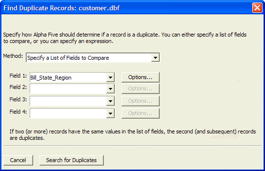
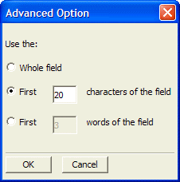
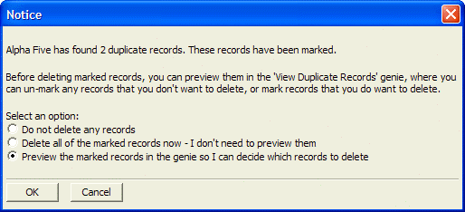
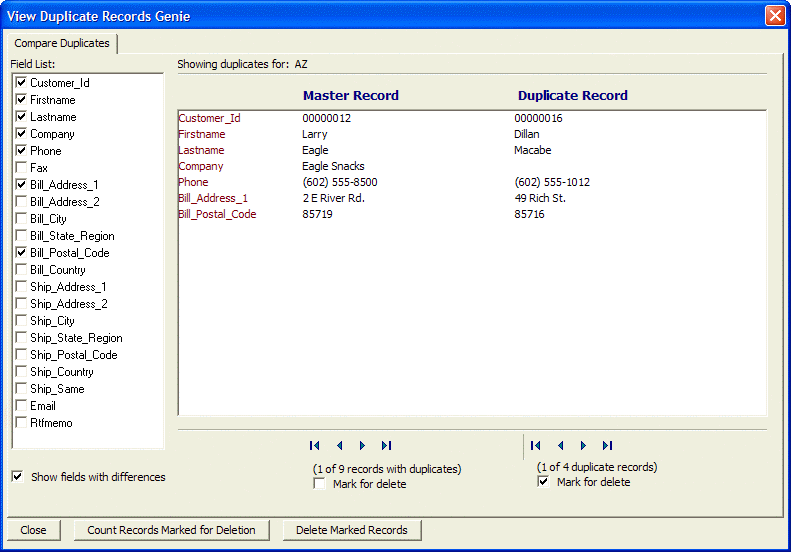

Duplicate Records Genie
Alpha Five Version 6 adds another powerful productivity tool in the Delete Duplicate Records Genie. The Delete Duplicate Records Genie helps you find, review, and optionally mark or delete duplicate records.
Alpha Five has always had a facility to mark and delete duplicate records. Typically, users would use the Mark Duplicate Records operation to mark all duplicate records. Then they would manually preview the marked records to decide which marked records were indeed duplicates. Finally, they would delete the marked duplicates. This new genie makes it much easier to go through these steps because it allows you to easily compare the original record (the master record) with each of the duplicates of that record. as you compare the master record with its duplicates you can decide if you want to retain any record marked for deletion.
The Delete Duplicate Records Genie allows you to:
select any combination of fields to examine.
select fields by value or by expression
examine partial or full field values
view the entire record or just the fields with differences
interactively compare potential duplicates with the first, or master, instance
scroll through duplicates
count duplicates
Select Table > Utilities > Delete Duplicate Records ? or right click on a table and select Utilities > Delete Duplicate Records ? to display the following dialog box.

Make a selection from the Method list. The options are:
"Specify a List of Fields to Compare"
"Specify an Expression (Advanced Method)"
If you selected "Specify a List of Fields to Compare" in step 2:
Select a field in the Field 1 list.
Optionally, click Options ... button to refine the field based search.

Optionally, restrict the comparison to the first N characters of the field.
Optionally, restrict the comparison to the first N words of the field.
Click OK to continue or Cancel to discard your inputs.
Optionally, repeat steps 3a to 3e for additional fields.
If you selected "Specify an Expression (Advanced Method)" in step 2:
Enter an expression in the Expression field.
Optionally, click
 to display the <span class=Screen>Expression Builder</span> to help you define the expression.
to display the <span class=Screen>Expression Builder</span> to help you define the expression.Click OK to continue or Cancel to discard your inputs.
Click Search for Duplicates button to display the following dialog:

Optionally, select Do not delete any records and click OK. This leaves the duplicates marked and available for future deletion.
Optionally, select Delete all of the marked records now and click OK to remove the duplicates.
Optionally, select Preview the marked records and click OK to display the View Duplicate Records Genie.
This sample screen shot of the View Duplicate Records Genie shows:

There are 9 records that have duplicates.
The current "master record" has 4 duplicate records. Alpha Five is showing the data in the "master record" and the 1st of the 4 duplicate records for "AZ".
Initially, the master record is not marked (checked) for deletion. The duplicate records are marked for deletion. Optionally, toggle the check boxes if you decide that you want to keep all records or delete the master record and keep the duplicate records.
Optionally, check Show fields with differences. Alpha Five automatically calculates the fields that have different values, places checkmarks to the left of their names, and displays their values in the main window.
Optionally, if Show fields with differences is not checked, place checkmarks to the left of the fields you want to compare.
Optionally, use the navigation buttons under the master record and the duplicate record to scan the duplicate records and see their field values.
Optionally, click Delete Marked Records to remove duplicate records
Optionally, click Count Records Marked for Deletion to display a message with a count of records marked for deletion.
Click Close to finish.
Using the Mark Duplicate Records Operation
There is another way to get to the Delete Duplicate Records Genie.
Display the Operations tab of the Control Panel.
Click New.
Check the More check box.
Select the Mark Duplicate Records operation, select the table or set you want to process, and click Create.
Click Duplicate Selected Records.
Enter an expression in the Expression field. Optionally, click
to display the <span class=Screen>Expression Builder</span> to help you define the expression.Click Run on the toolbar.
Click View records in the 'View Duplicates Genie'.
Using Xbasic to Remove Duplicates
Finally, you can also display the Delete Duplicate Records Genie using an Xbasic method:
|
a5_viewduprecs(tablename as C, duplicate_key_expression as C, run_query_to_find_dups as L ) |
For example:
|
dim tbl as T tbl = table.open("customer") tbl.mark_range("state",".t.") 'mark all duplicate states tbl.close() 'open the genie - no need to run the query to mark duplicate states because it has already been run. A5_viewduprecs("customer", "state", .f.) |
Alternatively, open the genie and run a query to mark duplicate states before displaying any data in the genie:
|
A5_viewduprecs("customer","state",.t.) |
See Also
A5_VIEWDUPRECS(), Table Operation Methods
Supported By
Alpha Five Version 6 and Above